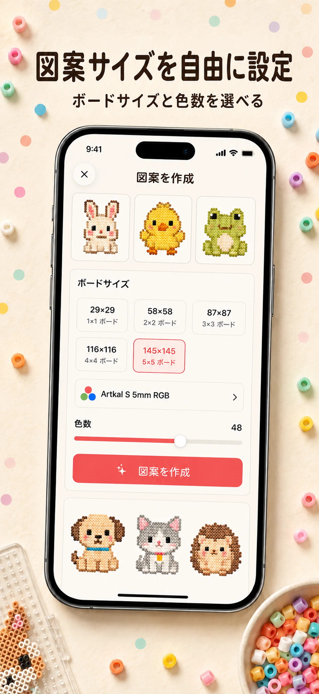

写真の細部がつぶれる
写真・イラスト用とピクセルアート・ロゴ用を分け、画像の性質に合う方法で図案を作ります。
写真から、実際に作れる図案へ
写真やイラストを読み込み、ボードサイズと色数を選ぶだけ。BeadCraftは実在するビーズ色に合わせた図案、色番号、必要個数をまとめ、制作中の進捗までiPhoneで管理します。
公式サイト · App Store ID 6779639958 · バージョン1.5.1 · App Store販売元：雪梅 黄

図案づくりで止まりやすいところ
実物のビーズで完成させるには、輪郭を残すサイズ、買える色、正確な個数、途中で迷わない手順が必要です。
写真・イラスト用とピクセルアート・ロゴ用を分け、画像の性質に合う方法で図案を作ります。
Perler、Hama、Nabbi Nano、Artkalの色番号と、色ごとの使用数を生成結果から確認できます。
ボードと色を切り替え、置いたセルを記録。残り個数と全体進捗を見ながら続きから再開できます。
3ステップ
写真・イラスト、またはピクセルアート・ロゴを選択。必要な部分に合わせて切り抜きます。
仕上がりの細かさと作業量を見ながら調整し、実在する色の図案を生成します。
色番号と個数を確認し、制作モードまたは印刷用PDFを見ながら進めます。
現在のアプリ画面


悩み別ガイド
アカウントや写真保存用の開発者サーバーは不要です。保存した図案とプロジェクトも端末内に置かれます。